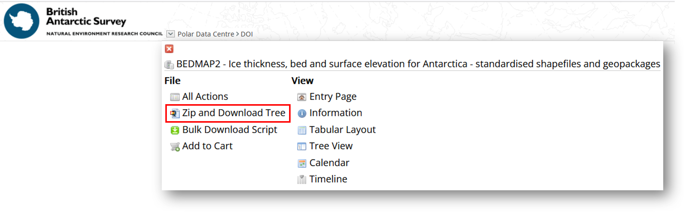

Downloading the Bedmap data¶
This Jupyter Notebook shows how to download the Bedmap products either via Ramadda or programmatically.
List of data available for download¶
The complete list of data available as part of Bedmap is available here: https://antarctica.github.io/PDC_GeophysicsBook/BEDMAP/data_available.html
The Bedmap CSV files are available for download from the UK Polar data Centre:
BEDMAP1 CSV: https://doi.org/10.5285/f64815ec-4077-4432-9f55-0ce230f46029
BEDMAP2 CSV: https://doi.org/10.5285/2fd95199-365e-4da1-ae26-3b6d48b3e6ac
BEDMAP3 CSV: https://doi.org/10.5285/91523ff9-d621-46b3-87f7-ffb6efcd1847
The Bedmap shapefiles/geopackages points and lines data are also available from the UK Polar Data Centre:
Bedmap1 statistically-summarised data points (shapefiles): https://doi.org/10.5285/925AC4EC-2A9D-461A-BFAA-6314EB0888C8
Bedmap2 statistically-summarised data points (shapefiles): https://doi.org/10.5285/0F90D926-99CE-43C9-B536-0C7791D1728B
Bedmap3 statistically-summarised data points (shapefiles): https://doi.org/10.5285/A72A50C6-A829-4E12-9F9A-5A683A1ACC4A
Downloading the data via the Ramadda interface¶
From the metadata page accessible via the DOI, it is possible to access the data by clicking on ‘GET DATA’. You will then be redirected to our Ramadda repository.
From the interface, it is possible to download the data individually by clicking on the dataset you want to download. It is also possible to zip and download the data together by clickng at the top of the ramadda interface on the down arrow next to “Polar Data Centre > DOI” and Zip and Download Tree:

Rammadda also allows to select the files you want to download: you will need to click on the little icon at the top left corner of the table containing the list of data to download, select the list of data you want to download and Apply the action you want from the drop down list:

/!\ The feature to zip and download all the datasets does not work for Bedmap3 due to the size. We are working at the PDC to make this feature available again.¶
Downloading the data via wget command¶
Please find below the different command to download the Bedmap datasets:
Downloading Bedmap1 CSV and shapepoints:
wget --content-disposition --trust-server-names "https://ramadda.data.bas.ac.uk/repository/entry/show?entryid=f64815ec-4077-4432-9f55-0ce230f46029&output=zip.tree"
wget --content-disposition --trust-server-names "https://ramadda.data.bas.ac.uk/repository/entry/show?entryid=925ac4ec-2a9d-461a-bfaa-6314eb0888c8&output=zip.tree"
Downloading Bedmap2 CSV and shapepoints/shapeLines:
wget --content-disposition --trust-server-names "https://ramadda.data.bas.ac.uk/repository/entry/show?entryid=2fd95199-365e-4da1-ae26-3b6d48b3e6ac&output=zip.tree"
wget --content-disposition --trust-server-names "https://ramadda.data.bas.ac.uk/repository/entry/show?entryid=0f90d926-99ce-43c9-b536-0c7791d1728b&output=zip.tree"
Downloading Bedmap3 CSV and shapefiles:
Due to the size of the dataset and limitations on Ramadda (that we are trying to resolve), it is not possible to download the dataset with a single URL. You will need to download the following file containing the list of files to download: Bedmap3_csv_list.txt and run:
wget --content-disposition --trust-server-names -i Bedmap3_csv_list.txt
The same applies for the shapepoints and lines, you will need to download the following file: Bedmap3_shapefiles_gpkg_list.txt and run:
wget --content-disposition --trust-server-names -i Bedmap3_shapefiles_gpkg_list.txt